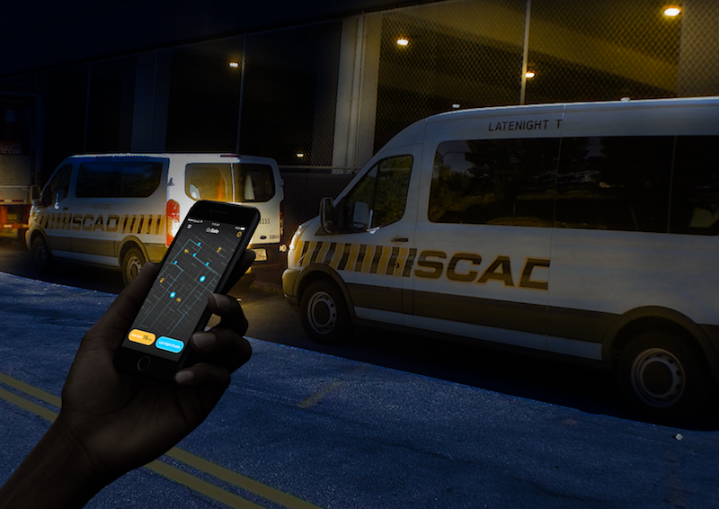

Sprint is a method for answering critical business questions through design, prototyping, and testing ideas with customers. Developed at GV, it’s a “greatest hits” of business strategy, innovation, behavior science, design thinking, and more—packaged into a battle-tested process that any team can use. For Gosafe, our chanllenge is that SCAD students have a bad experience in requesting a Safe Ride, and the long-term goal of the project is to improve the user experience of SCAD SafeRide.